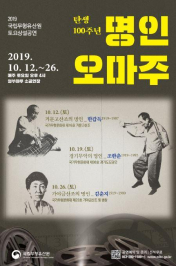

구술채록

크게보기
구술채록
국가무형문화재 전승자 구술 자서전(040) 선소리산타령 최창남
목록으로
-
구술자
선소리산타령(선소리山打令)최창남
-
부제
나는 그냥 소리만 하는 거야
-
채록년도
2019년
-
채록장소
서울시 강남구 삼성동 국가무형문화재 전수교육관
-
조사면담
김혜정(경인교육대학교)
-
범주
전통적 공연예술 > 음악
국립무형유산원에서는 국가무형문화재 전승자가 기·예능을 체득하기까지의 삶과 활동에 대한 재조명을 통해, 인간문화재로서의 가치를 재발견하고 전승자의 생애와 무형문화재 전승과정을 일반인들이 이해하고 공감할 수 있는 계기를 제공하고자 국가무형문화재 전승자 구술 자서전 발간 사업을 진행하고 있다.
선소리산타령 최창남 보유자는 1934년 인천시 강화군에서 태어났다. 어업에 종사하는 아버지를 따라 어업과 관련한 민요를 듣고 부르며 예술적인 재능을 키우다가 한국전쟁 이후 이창배의 청구고전학원에서 본격적으로 음악에 입문하였다. 타고난 감각으로 민요를 배우고 가르치며 전국적인 공연활동과 방송 출연, 다양한 공연 연출에서 활약하다 2009년에 국가무형문화재 선소리산타령 보유자로 인정되었다.
전승자 연보
1934년 01세 3월 24일 출생(父 최춘길, 母 이순애의 4남 2녀 중 장남) 강화군 서도면 말도리(주민등록상 1935년생)
1940년 07세 말도세신학원 입학
1942년 09세 황해도 연백군 해성면 해남리 이주
1945년 12세 해남공립국민학교 4학년 재학, 8.15 해방 직후 인천시 송림4동으로 이주
1946년 13세 교회 야학, 아버지와 어업 활동
1949년 16세 인천동산고등학교 입학
1950년 17세 인천동산고등학교 2학년 중퇴, 6.25 전쟁 군대 입대
1951년 18세 의병 제대
1952년 19세 해군 문관
1955년(추정) 22세 이창배 청구고전성악학원 입학
1963년 30세 인천고전성악학원 설립
1968년 35세 이은관 민속예술학원 민요 강사